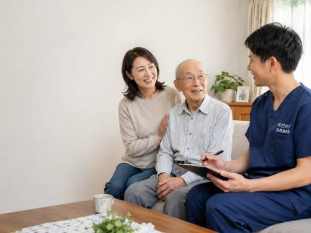
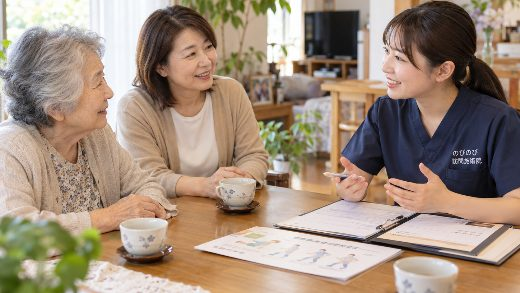

「生活保護を受けているけれど、自宅で鍼やお灸のケアは受けられるのだろうか」。そんなお尋ねをよくいただきます。生活保護を受けている方は、公的な医療保険ではなく医療扶助というかたちで、訪問鍼灸マッサージを受けられる場合があります。要介護認定を受けていることは前提ではありません。ただ、対象になるかどうかや進め方は一人ひとりの状況で変わります。ここでは、担当のケースワーカーへの相談から施術開始までの流れを、順を追って整理します。
先に要点を。生活保護を受けている方も、医療扶助の範囲で訪問鍼灸マッサージを受けられる場合があります。流れは、担当のケースワーカーに相談し、給付要否意見書などの書類を受け取って主治医に必要性を判断してもらい、福祉事務所での確認を経て施術を始める、というものです。医療扶助で認められた場合は、原則として本人負担が生じない扱いになることがありますが、個別の可否は担当のケースワーカーにご確認ください。医師の同意が要る点や、慢性症状で通院がむずかしい方が対象になる点は、医療保険の場合と同じです。書類のやりとりは当院が進めます。
生活保護を受けていても、訪問鍼灸マッサージは受けられます
生活保護を受けているという理由で、訪問鍼灸マッサージをあきらめる必要はありません。腰や肩の痛み、手足のしびれ、関節のこわばりといった慢性的な症状があり、自力で通院を続けることが難しい。そうした状態にある方は、生活保護を受けている場合でも施術を受けられます。このとき費用をまかなうのが「医療扶助」という仕組みです。
医療扶助は、生活保護の中で医療にかかる部分を支える制度です。訪問鍼灸マッサージも、医師が必要と認めた療養の一つとして、この医療扶助の対象に含まれます。つまり、一般の方が医療保険を使って受けるのと同じように、生活保護を受けている方は医療扶助を使って受ける、という整理になります。制度の入口が違うだけで、受けられる施術の中身が変わるわけではありません。
医療扶助で受ける場合の前提条件
まず知っておいていただきたいのは、生活保護を受けているからといって、誰でも自動的に受けられるわけではない、という点です。医療保険で受ける場合と同じく、医師の判断が前提になります。
訪問鍼灸マッサージが保険や医療扶助の対象になるのは、神経痛・リウマチ・頸肩腕症候群・五十肩・腰痛症・頸椎捻挫後遺症といった慢性的な症状に対して施術を行う場合です。これらに当てはまり、かつ通院が困難であると医師が認めたときに、対象として扱われます。かかりつけの医師がいる方は、その先生に状態を診ていただくところから話が始まります。
一方で、要介護認定は条件ではありません。介護保険の認定を受けていなくても、医師が必要と認めれば受けられます。ここは誤解されやすいところなので、あらためてお伝えしておきます。
ケースワーカーへの相談から始まります
手続きの入口になるのは、担当のケースワーカー、つまり福祉事務所への相談です。医療扶助を使うかどうかの判断は福祉事務所が行うため、まずはここに話を通す必要があります。
相談のときにお伝えいただきたいのは、どこにどんな症状があるのか、通院がどのくらい難しいのか、かかりつけの医師がいるかどうか、といったことです。うまく説明できるか不安に感じる方もいらっしゃいますが、専門的な言葉で整理して話す必要はありません。「腰が痛くて外まで歩くのがつらい」といった、ご自身の言葉で構いません。ケースワーカーはそうした相談を日常的に受けています。
医師の同意を得て、福祉事務所の決定へ
ケースワーカーへの相談のあとは、医師の判断を仰ぐ段階に入ります。医療保険で受ける場合に必要な同意書と同じ考え方で、医療扶助の場合は給付要否の意見書などを医師に記入してもらう流れになります。施術が必要な状態かどうかを、医師が医学的に判断するわけです。
医師が必要と認め、福祉事務所がその内容を確認して決定を出すと、そこで初めて施術を始められます。書類の名称ややり取りの細かい段取りは自治体によって差があるため、実際の進め方は担当ケースワーカーに沿って進めていくことになります。医師の同意については、医師の同意書とは？取得の流れと注意点もあわせてご覧いただくと、全体の流れがつかみやすくなります。
費用のこと。自己負担なしで受けられる場合があります
お金の心配は、多くの方がいちばん気にされるところだと思います。ここは正確にお伝えします。
一般に医療保険で受ける場合、訪問鍼灸マッサージは1回の総額がおよそ3,950円で、そのうち負担割合に応じた金額を本人が支払います。1割の方でおよそ395円、2割でおよそ790円、3割でおよそ1,185円が目安です。医療扶助を受けている方の場合は、この本人負担にあたる部分が扶助でまかなわれる扱いになります。そのため、原則として自己負担なしで受けられる場合があります。
ただし、負担が生じるかどうかは受給の状況や自治体の運用によって変わることがあります。「必ず無料」と断言はできません。実際にどうなるかは、手続きの前にケースワーカーへ確認しておくと安心です。一般の料金の仕組みについては、料金はいくら？医療保険の自己負担額と仕組みで詳しく説明しています。
施術で受けられる内容と、注意しておきたいこと
施術では、はり・きゅうやマッサージに加えて、関節を動かす練習や運動といった機能訓練も行います。この機能訓練は鍼灸に加えて行います。体を動かしづらくなっている方には、痛みをやわらげる施術と合わせて、体の様子を見ながら動きを保っていくお手伝いができます。
いくつか正確にお伝えしておきたいこともあります。訪問鍼灸マッサージは、慢性的な症状をやわらげ、日々を過ごしやすくすることを目的としたものであって、病気そのものを治すものではありません。効果の出方には個人差があります。また、同じ部位について、医療保険によるリハビリと鍼灸を同時に算定することはできません。こうした点も、あらかじめ知っておいていただけると、受けたあとに戸惑わずにすみます。
手続きは当院が引き受けます
ここまで読んで、手続きが複雑そうだと感じた方もいるかもしれません。医師への相談、意見書、福祉事務所とのやり取り。一人で全部を進めようとすると、たしかに負担に感じられると思います。
その部分は、当院がケースワーカーや医師と連携しながら段取りします。どこに何を伝えればよいか、次に何をすればよいかを、一つずつ一緒に確認していきます。生活保護を受けていることを人に話すのはためらわれる、という気持ちを持つ方もいらっしゃいますが、恥ずかしいことでは決してありません。痛みをやわらげ、暮らしを少しでも楽にすることは、どなたにも等しくある権利です。まずは気負わず、ご相談ください。
よくある質問
生活保護でも訪問鍼灸マッサージは受けられますか？
医療扶助の範囲で受けられる場合があります。慢性的な痛みやしびれで通院がむずかしく、医師が必要を認めた方が目安です。要介護認定は前提ではありません。対象になるかどうかは状況で変わるので、担当のケースワーカーに確認しながら進めます。
医療券は必要ですか？
医療扶助では、福祉事務所から発行される医療券などが使われるのが一般的です。必要な書類や手続きは自治体ごとに異なるため、具体的には担当のケースワーカーに確認しながら整えます。準備のやりとりは当院がお手伝いします。
自己負担はかかりますか？
医療扶助で認められた場合、原則として本人負担が生じない扱いになることがあります。ただし扱いは受給状況や自治体の運用で変わることがあるので、手続きに入る前に担当のケースワーカーに確認しておくと安心です。
ケースワーカーには何を相談すればいいですか？
「鍼やお灸の施術を受けたい」という希望に加えて、どんな症状で困っているか、通院がどれくらいむずかしいか、かかりつけの医師がいるかを伝えると話がすすみます。整理しておくとよい内容は当院からもお伝えします。
医師の同意書は必要ですか？
はい。医療保険の場合と同じく、施術の必要性について医師の判断が必要です。給付要否意見書などのやりとりや、主治医への依頼の段取りは当院が進めますので、ご家族が一から病院にお願いに行っていただく必要はありません。
要介護認定を受けていないと受けられませんか？
要介護認定は前提ではありません。慢性的な症状で通院がむずかしく、医師が施術の必要を認めていることが目安です。認定の有無にかかわらず、まずは状況を聞かせていただければ見当をお伝えします。
相談してから受けられるまで、どれくらいかかりますか？
ケースワーカーへの相談、書類のやりとり、主治医の記入、福祉事務所での確認と段階を踏むため、その日のうちに始まるわけではありません。書類が行き来する時間が要ります。今どの段階かはそのつどお伝えします。
施設に入っていても受けられますか？
有料老人ホームやサービス付き高齢者向け住宅などにお住まいの方のところにも伺えます。生活保護を受けながら施設で暮らす方も、条件が整えば医療扶助で受けられる場合があります。施設のスタッフやケースワーカーと相談しながら進めます。
この記事の根拠
はり・きゅう、あん摩マッサージ指圧の療養費は、厚生労働省が定めた取扱いにもとづく制度です。制度そのものをご自身で確かめたいときは、厚生労働省の療養費について（新しいタブで開きます）をご覧ください。「被保険者のみなさまへ」の案内も、同じページからたどれます。

ペースメーカーや持病があっても鍼灸は受けられる？｜安全に受けるための確認とご相談のしかた
続きを読む
訪問鍼灸マッサージの申し込みに必要なもの・書類は？そろえ方とはじめの手続き
続きを読む
訪問鍼灸マッサージの同意書はどうやってもらう？かかりつけ医への頼み方と流れ
続きを読む
初めての方へ｜訪問鍼灸マッサージの申し込みから施術までの流れ
続きを読む
訪問鍼灸マッサージは月にいくら？週1〜3回・1割2割のケース別料金ガイド
続きを読む